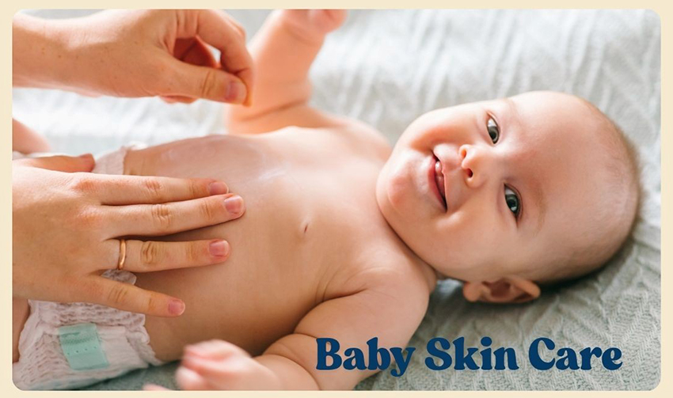
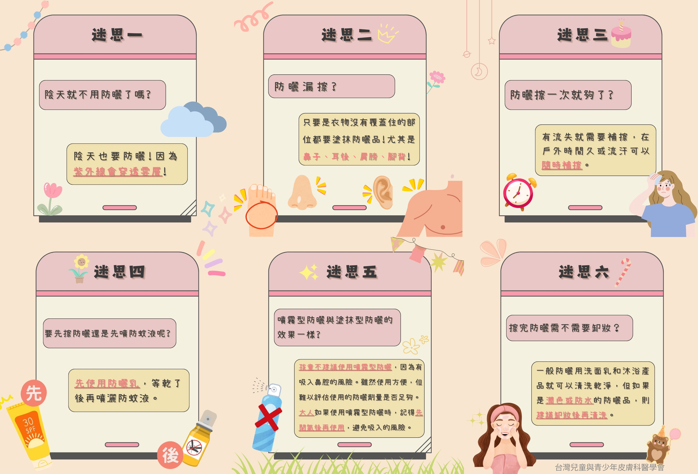
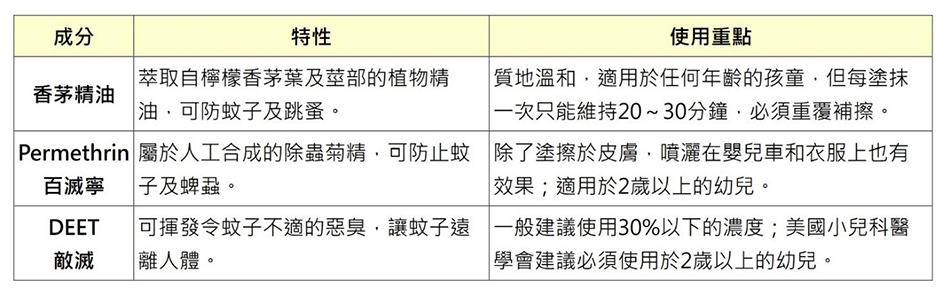

每月快訊
 月號－哺乳育嬰站
月號－哺乳育嬰站寶寶皮膚照護全攻略
寶寶的皮膚雖然看起來光滑細緻，實際上卻相當脆弱。相較於成人，嬰幼兒皮膚的角質層較薄、新陳代謝旺盛，對外界刺激與環境變化的反應更加明顯，無論是冷、熱、濕、乾、日曬、蚊蟲，都是潛在的刺激源。因此，為了守護寶寶細嫩的肌膚，家長們需要從清潔、保濕、防曬、防蚊四大面向下手，並隨著季節變化做出適當調整。 |
|  |
| 寶寶的皮膚特性 |
| 1.保護機能較弱：角質薄、黑色素少，易受刺激與紫外線傷害。 2.體表面積比例高：毒性物質影響比成人明顯。 3.新陳代謝旺盛：汗腺尚未成熟，水分與體溫調節功能不佳。 4.體溫高：易吸引蚊蟲，叮咬後反應較成人明顯。 5.皮膚脂質較多：易吸收蛋白質類的過敏物質，導致過敏的現象。 |
| 寶寶夏季皮膚保養要領 |
| 1.環境與穿著： ･ 保持環境舒適涼爽、空氣流通。 ･ 選擇純棉、透氣、吸汗、輕薄的衣物，避免包得太緊，減少皮膚悶熱和汗疹。 2.皮膚清潔與照護： ･ 選用天然、溫和、不刺激的嬰幼兒專用產品。 ･ 寶寶流汗後應立即擦乾並勤換衣物、保持清潔乾爽，預防濕疹與尿布疹等問題。 ･ 洗澡水溫不宜過熱，也不需過度搓洗。 ･ 檢查尿布是否乾淨無髒污（黴菌、布料粗糙等）。 ･ 若出現紅疹、濕疹等狀況，應就醫諮詢小兒科或皮膚科醫師，勿自行塗抹成份不明藥膏。 3.防曬與保濕： ･ 使用陽傘或穿著防曬衣物，外出時幫寶寶戴上防曬帽子、穿上輕薄長袖、長褲，減少皮膚裸露。 ･ 上午10點至下午2點為紫外線最強，若需外出要注意防曬措施。 ･ 適度補充水份，避免脫水、中暑等情形。 ･ 防曬乳選擇： 6個月以下嬰兒：以遮陽為主，不建議使用防曬乳。 6個月以上~2歲：建議使用物理性防曬（如氧化鋅、二氧化鈦），避免化學性防曬成分。 ･ 曬傷處理： 輕微曬傷：以冷水浸泡或冷敷患處，每次約20分鐘，一天3-4次。 保養品選擇：可擦拭含蘆薈成分、溫和不刺激的保濕品緩解不適。 避免刺激：曬傷後勿用熱水或刺激性清潔用品洗澡，衣物應選柔軟材質。 嚴重曬傷：若紅腫、水泡明顯，應就醫處理，由醫師開立適合藥品。 ･ 防曬常見迷思: |
|  |
| 4.防蚊與蚊蟲叮咬預防： ･ 避免前往蚊蟲多的環境（草叢、林地等）。 ･ 保持室內通風清潔、使用蚊帳或電蚊香、避免積水容器孳生蚊蟲。 ･ 穿著輕薄長袖長褲與鞋子，塗抹嬰幼兒適用防蚊液、防蟲軟膏。 ･ 防蚊液與防曬乳應錯開時間塗抹，兩者同時使用會加速皮膚吸收DEET（敵避、待乙妥）。 ･ 常見的防蚊蟲成分及使用重點 |
|  |
| ･ 被叮咬後照護： |
冰敷止癢：初期紅腫時可冰敷，減輕癢感與腫脹。 正確用藥：塗抹醫師建議的止癢、消腫藥膏，避免使用不明藥品。 避免抓傷感染：可剪短寶寶指甲，防止搔抓後留下疤痕或引起蜂窩性組織炎。 嚴重反應就醫：若出現大面積紅腫、水泡、發燒等情形，需立即就診。 |
寶寶的皮膚照護需要家長們的細心與耐心，不同季節、不同活動都應調整護膚方式。只要掌握「清潔、保濕、防曬、防蚊」四大原則，並適時諮詢醫師專業意見，就能協助寶寶健康成長、舒適過每一天。 |
 |
資料來源 |